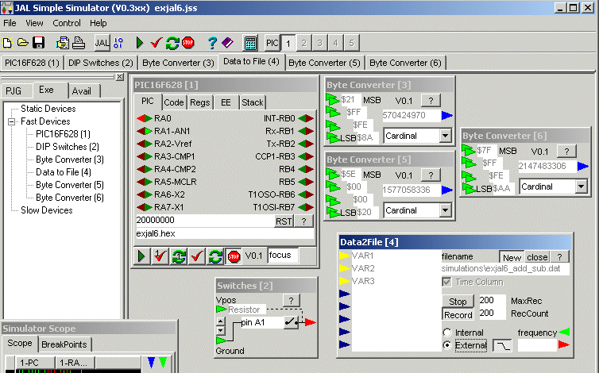
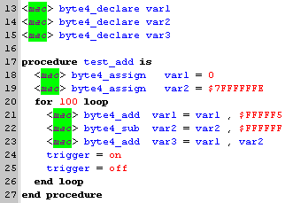
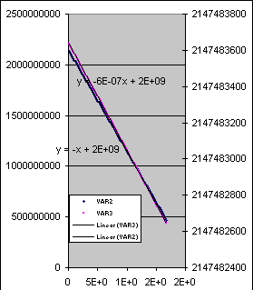
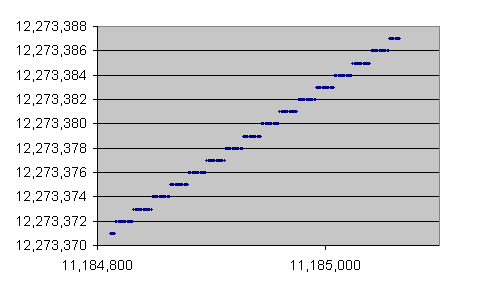
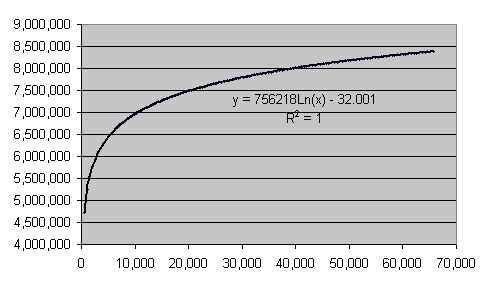
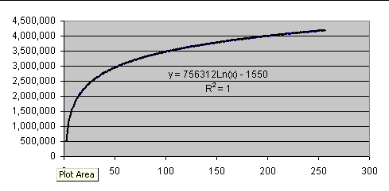

January 2003
JALss, math demo
This demo shows an example of 24-bit math.
The demo was used to test 24 bit math routines for addition, subtraction and log-conversion.

|
 |
 |
|
Log validation Top-right: 255 steps of 513 , starting at 1 Topbottom 255 steps of 1, starting at 1 Below: 255 steps of 1, starting at $AAAAAA  |
  |